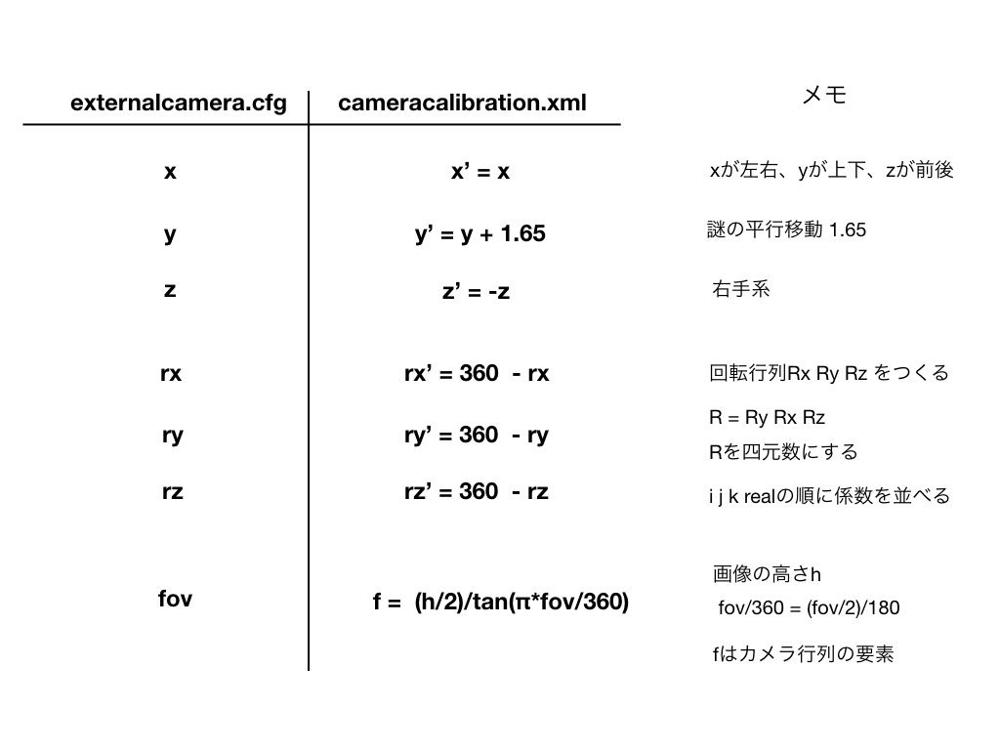

on
VMCとOculusMRCで合成 ~カメラ位置解決編~
要約
Oculus Mixed Reality Captureのカメラ位置の設定できるようになった。
前回のあらすじ
Virtual Motion CaptureとOculus Mixed Reality Captureでクロマキー合成できるようになったけど、カメラ位置合わせができない。
（しつこいですが）注意
前回、VMC+MRCを試して環境が壊れてしまった例があったそうですので、実行する場合はご注意ください。
この記事書いてる人も、自分が何をしているのかよく理解していません。
やったこと
- まずOculusのCameraToolで適当にカメラキャリブレーションした。USBカメラを使った。
- 出力したxmlの中身を読んで、数値の意味を推測した。
- externalcamera.cfgをOculus MRC用のxmlに変換するスクリプトを書いた。
できるようになったこと
VMCで出力したexternalcamera.cfgをもとにして、カメラ位置をOculus MRCに反映することができる。
カメラ位置と画角を変えてテストした。
- Oculus Rift + Touch
- Virtual Motion Capture (ちょっと古いやつ)
- Nanome from Oculus store
正面で画角が大きい場合
カメラ位置フリーで設定、画角小さめの場合
ちゃんとできてるように見える。
あまり手を伸ばすと手首が離れたりしてちょっと怖い。これはコントローラー入力ができなくなるのをごまかすため、手に少し細工をしているせい。このあたりは下の方の「LIVでやる時との違い」で触れてます。
VMC + MRC合成作業流れ
- LIVを起動する
- 仮想コントローラー目当てで、念の為つかっている。
- VMCを起動、設定を済ませる。忘れずに仮想カメラをONにする
- VMCからexternalcamera.cfgを出力する
- externalcamera.cfgからOculus CameraTool用のcameracalibration.xmlをつくる
- ここでスクリプトを使っている。
- LIVはこのあと不要なので終了する
- LIV側で、LIVを終了した時に仮想コントローラーを消さない設定をしておくとよい感じに進む。
- CameraToolを起動、つくったxmlをよみこんでSave to OVRserverする
- CameraToolの画面でVMCからのキャプチャーとコントローラーのモデルが合成表示されるので、両者の手の位置合わせが正しいか確認できる。
- よければCameraToolを終了する。
- 目的のゲームを端末から -directcomposition で起動する
- 楽しむ
スクリプト
extcam2camcalib
extcam2camcalib ：恥ずかしながら公開
- R版とpython版がある。だいたい同じだけど、自分はRでやっている。
- バイナリになってません
- python版はpyinstallerでコンパイルする！そのあと公開する！とか思って書いたが、力尽きた。
- なので外部のライブラリがいります。めんどくさい。
- cx_Freezeとか試すやる気がでたら、ちゃんときれいにします。
- VMCから出力したcfgをxmlにすることしか考えていない
- レンズの歪み補正係数（5変数）が常に0になってるので、本当のカメラでのMRには向かない。
- xmlの下の方のクロマキー関係の変数は触っていない。いまのところ緑背景しかつかえない。
- 一部変数が直書きされている
- 画面サイズとか・・・。もし使うときは適当に書き換えてください。
- 他の人の環境で使えるかはわからない。
template.xml
スクリプトと同じディレクトリにtemplate.xmlというファイルを置く必要がある（一緒にgithubにおいてあるやつ）。これを雛形にして値が出力される。
このファイルの最初の方にカメラの名前（？）を書く場所があるが、自分の場合
<camera_name>"0411&pid_0260&mi_00#7&17e718de&"</camera_name>
と書いてあった。しかし、ここを空欄
<camera_name>""</camera_name>
にしても手元では動いたので、githubに置いてあるやつは空欄にしてある。この辺りまったく手探りでわからない。
LIVでやる時との違い
コントローラーの入力ができなくなる
これがあるので、いまのところLIVでやれる場合はLIVでやった方が良い。
具体的には指と表情の操作ができなくなるので、VMCの良さを一部損ねてしまう。けど、幸いなことにトラッキングはできる。たぶんリップシンクも動いたはず。
仕組みを理解してないので想像だが、Oculusのゲームを起動するとSteamVRが裏側に行ってしまうようだ。結果、SteamVR側で動いてる（とおもわれる）VMCのコントローラー操作ができなくなるらしい。
今回は、もともと手のモデルが出てくるソフトを使ってるので、アバターの手の部分を透明にして隠し、擬似的に指を動かせる手があるようにみせかけている。手を伸ばしすぎると手首が離れるし、たまに袖との前後関係もおかしくなるが、自分はこのやりかたで満足した。
HMDのほうに合成映像を出せない
なにかツールを使ったらできるのかもしれないけど、今のところパッとはできてない。
数値の対応関係のまとめ

試行錯誤で決めたので謎が多い。たとえばカメラのy座標に謎の定数1.65がついてるが、これは「手の位置の具合からして1.65がベストかな？」とかいう感じで適当に決めた。なのでセンサーの設定とかアバターのサイズとか、ゲームによって変わってしまうかもしれない。
以下備忘録です
まとめ画像と重複するが、xmlの中身を読んだ過程の備忘録。
VMCで出力されるexternalcamera.cfgをcfg、MRC(CameraTool)に入力するcameracalibration.xmlをxmlと呼ぶことにする。
cfgでのカメラ座標(x,y,z)とxmlでの(X,Y,Z)の関係
<translation type_id="opencv-matrix">
の部分
- X = x
- Y = y + 1.65 (謎の定数）
- Z = -z 座標系の左右が違う
どれがどの座標か推測しやすいので、謎の定数を除けば、比較的簡単にわかった。
fovとcamera matrixの関係
<camera_matrix type_id="opencv-matrix">
の部分
fovとかカメラ行列って何？というところからスタート・・・
カメラ行列mは3x3の行列で、
- m[1,1] = fx
- m[1,2] = 0 固定
- m[1,3] = cx
- m[2,1] = 0 固定
- m[2,2] = fy
- m[2,3] = cy
- m[3,1] = 0 固定
- m[3,2] = 0 固定
- m[3,3] = 1 固定
行と列が逆かもしれない。いずれにしても、今回のxmlの中では、fx 0 cx 0 fy cy 0 0 1 と並べて書く。
行列の定義などは以下を参照した。
- OpenCV カメラキャリブレーション（鳥取大学）
- OpenCV カメラキャリブレーションと3次元再構成
- 今回のxmlはOpenCV由来のようなので、この周辺が最も参考になった
- MathWorks カメラ キャリブレーションとは ピクセルの歪みとしてsという変数が入ってたのが理解の助けになった。
cxとcyは、画像の中心になるようにとる。仮に1280 x 960のサイズだったら, cx=640 cy=480とする。これだとぴったり中心じゃない気もするけど、細かいことは気にしていない。
fxとfyは、それぞれピクセル単位での焦点距離。ピンホールカメラとして考える、らしい。fxと水平画角、fyと垂直画角が関係するらしい。以下の文書などを参考にした。
Unityのドキュメントによれば「This is the vertical field of view」らしいので、垂直画角だけ考えることにする。
画像の高さだけ考え、垂直画角をfov_yとすると
(H/2)/fy = tan(fov_y/2)
なので、
fy = H/(2*tan(fov_y/2))
fx = fy
で計算。角度は弧度法の値なので、ラジアンに直すか弧度法用の関数をつかう。
回転
<rotation type_id="opencv-matrix">
の部分
ここが一番難しかった。
正体不明の４変数 -> 四元数
実際にキャリブレーションしたときのxmlを読んで、数値をなんとなく二乗して全部足したら約1.0だった -> もしかして四元数・・・？
係数の順番も謎なんだけど、たぶん real i j k か i j k real だと推測して両方試した。
回転行列の角度の正の方向が不明 -> 適当に決めた
試行錯誤で、全部の軸について rx’ = 360 - rx などとするとうまく一致することを確認した。たぶん座標系が反転してるのとつじつまがあう。
回転行列の掛け算の順番が不明 -> 適当に決めた
Unityだと回転行列の作用順番はYXZかZXYらしいので、その２つに絞った。けど今回のやつにはあまり関係なかったかもしれない。とりあえず全パターン試さずに済んだのは運がよかった。
感想
- 不慣れな概念が多くて新鮮だった。
- 試行錯誤で推理するのは面白い。ただパターンが多いとこまる。
- 謎は尽きないが、できたし、まあいいか。
メモ
- MRCが起動できるか試してないけど、The ClimbとかのVMC合成やれるんじゃないだろうか？
ソフト
- Virtual Motion Capture
- VMC の開発者は @sh_akira さんです
- Booth
- Official Page
- このソフトが楽しいのでMRCでできるよう頑張ってみた
- Nanome
- https://nanome.ai/nanome/
- おそらく唯一の実用レベルVR分子ビューアと思われる
- LIV
- https://liv.tv/
- つかえなくなってわかる便利さ・・・
- VRoidStudio
- https://studio.vroid.com/
- 今回はアバターの手の部分をいじる必要があった